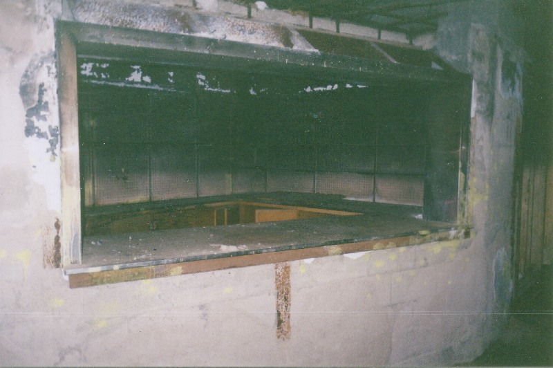
Inside, the Lima Tuberculosis Hospital is all dingy hallways and rooms in varying states of filthiness. Though it's been abandoned for something like twenty years, it's still quite possible to tell what rooms were used for and where you are in the hospital. Just past a side entrance is the front desk pictured above. A lot of things in this part of the building seem to have been scorched by a small fire at some point.
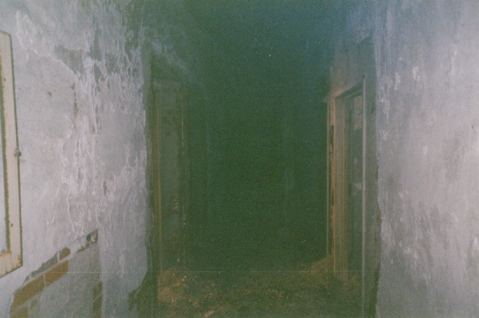
Also on the lowest floor are several storage areas, including the former hospital pharmacy. Barred doors and locked cages mark the storage wing.
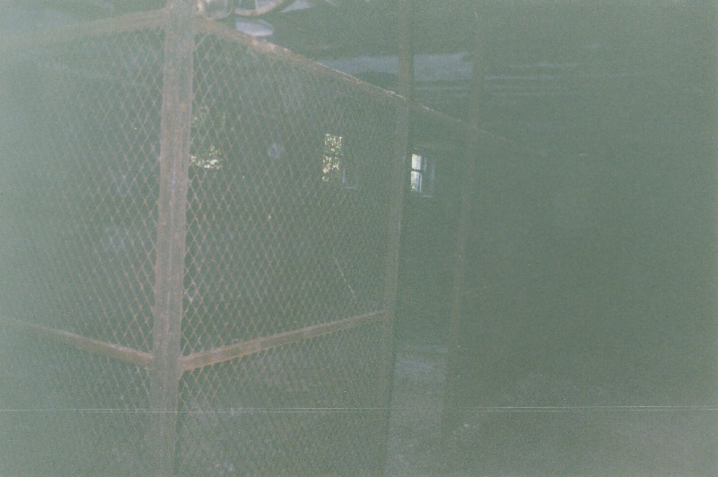
No patients seem to have been housed on this floor; it's all closets and physical facilities offices. The hospital laundry was down here as well, at the end of one of the long central hallways. It's easily identified by the industrial-size washer and drier against the wall.
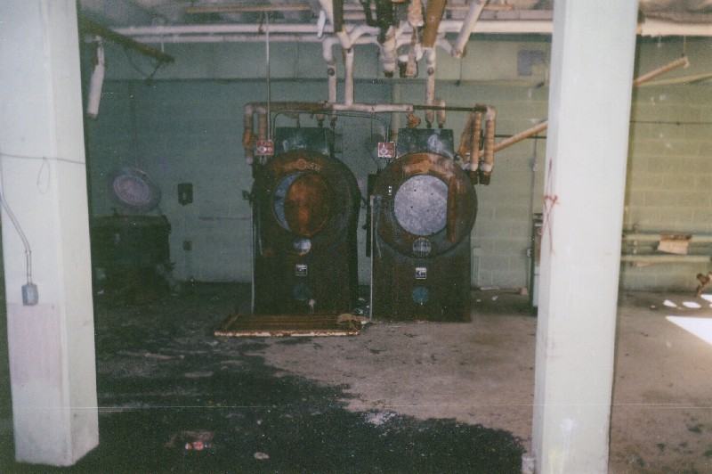
Also in the laundry chamber is the sheet ironer and folder, a steam pressing machine for the many hundreds of sheets washed here every day--also known as the mangler. If you got a sleeve caught in the belts of one of these things that's exactly what it would do to you. There's even a Stephen King story about one of these things coming to life.
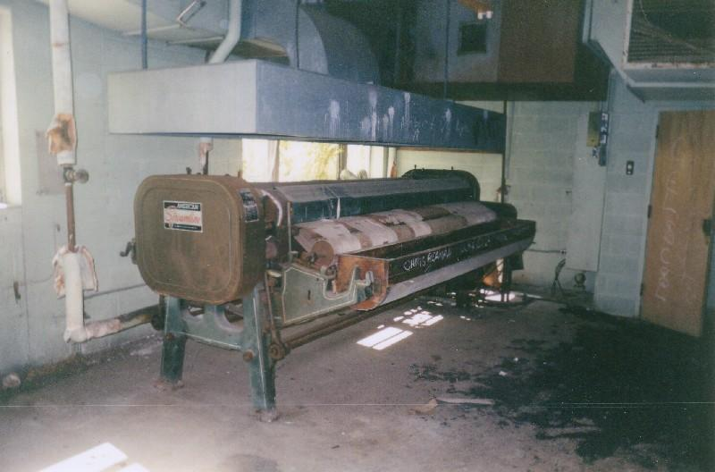
The patients' meals were prepared on this floor as well, in the big kitchen pictured below.
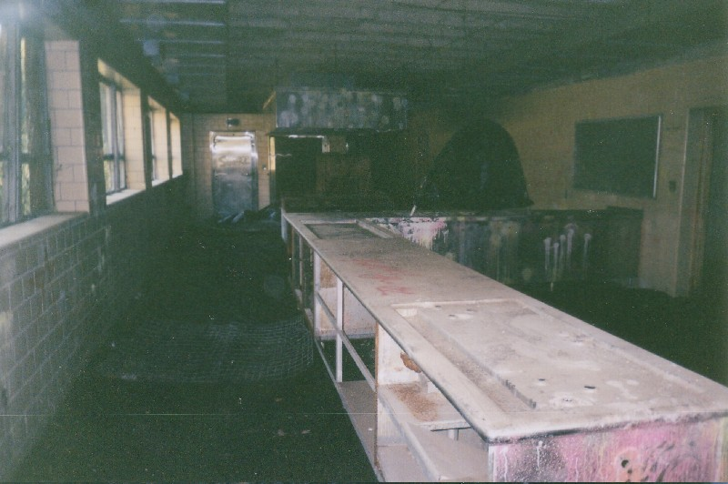
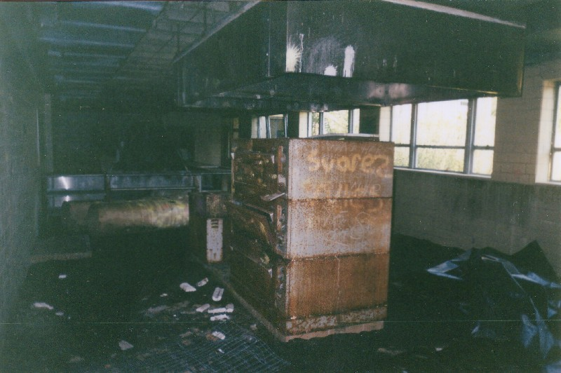
Everything in the kitchen was industrial-size, from the cans of food to the appliances used to prepare it. This cold-storage pantry is a good example. Disgusting stalagtites drip down from the cooler motor now that it's been left for a few years.
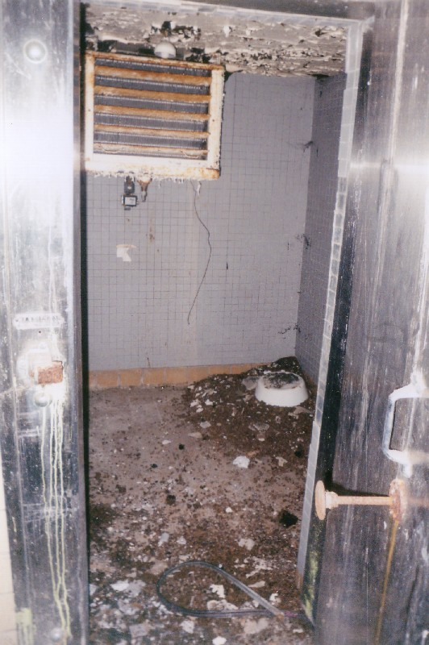
But the most fascinating thing on the bottom floor--the most morbidly enthralling thing in any hospital--is, of course, the morgue. In this case it amounts to a single body cooler. I suppose this hospital wasn't equipped to store bodies for very long; they were probably taken elsewhere before much time had passed, and this cooler was used only to store them overnight or for a weekend, until the coroner (or whoever) could send a van to pick them up. Even though the tray is gone, my friends and I still managed to lie down on the slab and be pushed into the drawer and have the door closed for a few seconds. Interesting to lie where so many tuberculosis victims spent some of their last days above ground.
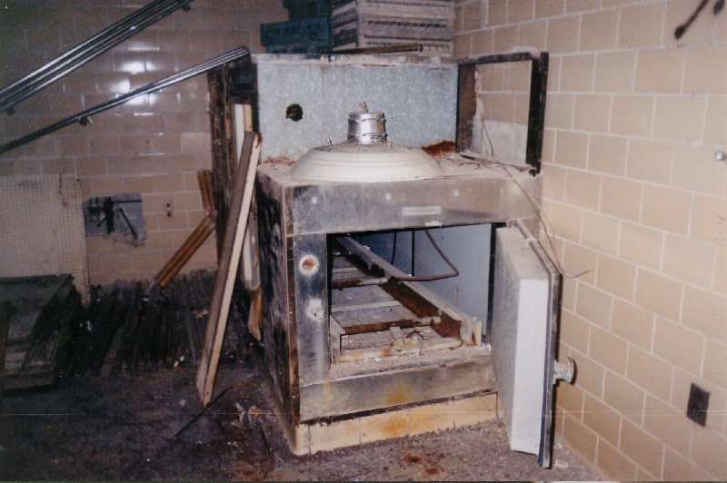
Because of the building's "U" shape, it's hard to know where you are on the bottom floor. There are at least four staircases, and many of them are blocked at one or more floor, making it even harder to know which way to go. But once you're on an upper floor it's easier to see and things are generally in better shape.
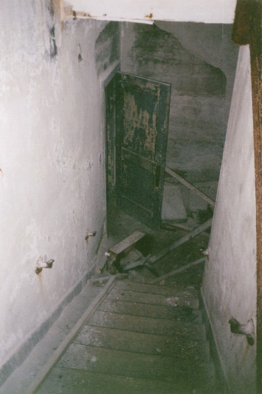
The upper floors are where you'll find the patients' rooms and the medical facilities. On the top level we came across this operating theater, complete with a light box in the wall for reading x-rays.
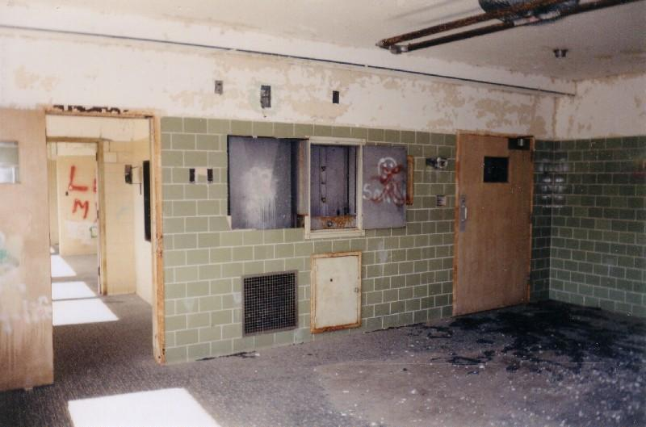
Patient rooms are everywhere throughout this part of the hospital. They're easily distinguished by the layout: bathroom close to the hallway door, sometimes a shower stall, a small closet. Often you can see the track in the ceiling where a divider curtain used to hang. Many of the rooms are joined with each other by private corridors that allow them to share a restroom.
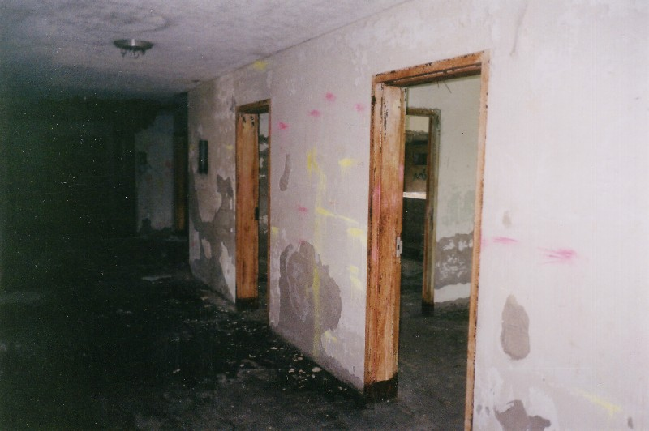
Sometimes furniture was left behind in the rooms. Not many beds (these were probably sent to other hospitals or sold at auction), but occasionally a chair or table. Here you can see a severely smashed-up adjustable rolling table, the kind that's open on one side so it can slide across your lap when you're in bed. There's a hinged extension that folds off to give you more surface room.
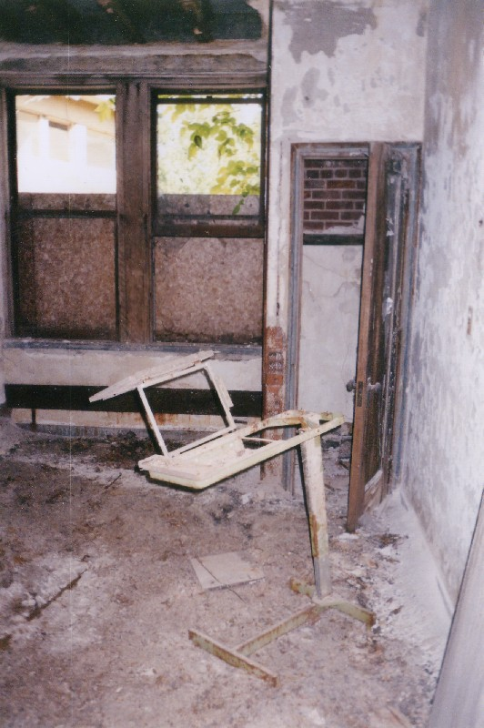
Lots of interesting stuff to see up here. But no trip to a big abandoned building like this is complete without climbing onto the roof. To see the view from the top of the Lima TB Hospital, click below.
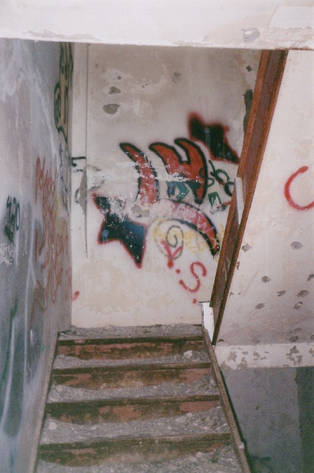
CONTINUE...
Back